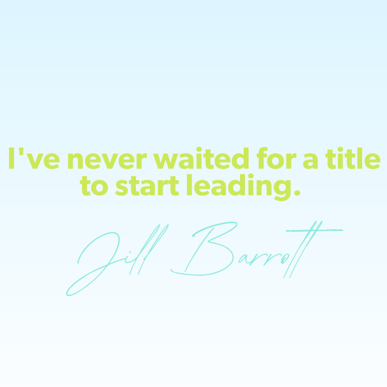
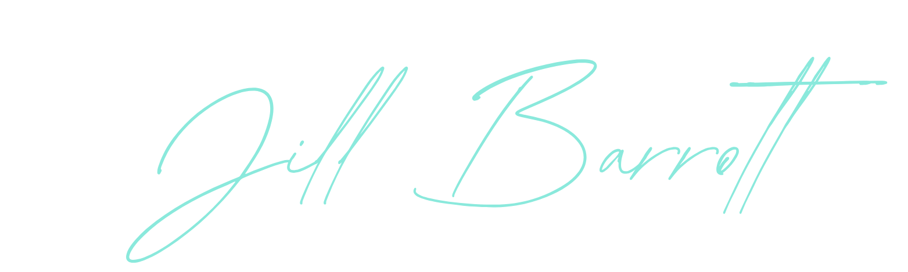

Marketing and communications leader focused on strategy, brand building, customer acquisition, public relations, and developing people to do their best work.
Hi, I'm Jill.
I'm a marketing and communications leader who builds structure where things are messy and momentum where things are stuck.
I'm equally comfortable zooming out to shape strategy and zooming in to write the message, build the plan, or get something out the door quickly when timing matters.
I'm also a coach at heart. I pay as much attention to developing the people around me as I do to the work itself.


A leader without a philosophy has already failed their team
Knowing what good leadership looks like is one thing. Having the courage to practice it — especially when it costs something — is another.
Set them up for success
If someone I'm guiding takes an unexpected path, I ask myself first: did I give them what they needed to succeed? Confusion is a leadership failure, not a people failure. When the brief is clear, the context is set, and the why is understood.
Composure is contagious
When the pressure is on, my job isn't to match the urgency — it's to right-size it. "Here's the one thing we need to nail, and here's what good enough looks like today." That sentence has unlocked more forward motion than any motivational push ever has.
Build the scaffold for confidence
Good coaching means meeting people where they are — not where you wish they were. The goal isn't to transfer my skills. It's to build their confidence until they don't need the scaffold anymore.
The why is the work
When I coach emerging writers, the first thing I push them toward is Sinek's question: who are you writing for, and what do they need? Set the why. People do better work when they understand the purpose they're serving.
I'd pay money for the lesson of a mistake
Every mistake someone makes is a coaching opportunity. The moment you fix it for them, you've stolen their chance to learn.
The leadership challenge I'm most honest with myself about: making unpopular decisions. Not letting the desire to be liked get in the way of giving my team what they actually need. I work on this. It's the gap between knowing what good leadership looks like and having the courage to do it when it costs something.
Leadership isn't a promotion. It's a practice.
"Jill conveys what she wants to see very clearly. You can visualize her vision from a Teams message or a project brief. Her communication is detail-oriented but always gets to the point — impactful wording without the noise."
— Carlos M., Marketing Coordinator at Valley Fiber"I appreciate the way you give feedback. Each time I'm assigned to a draft, you acknowledge the effort and your comments are always specific and helpful. Because of your encouragement and guidance, my confidence grew on this project."
— Joyce Gactucan, Marketing Coordinator at Canada LifeI'm looking for accountability that matches the way I already work. A role where I can set direction, develop people deliberately, and build a team whose trust in each other is what makes the work exceptional.
Empower others. Drive change. Build trust.
Let's connect and get to work.